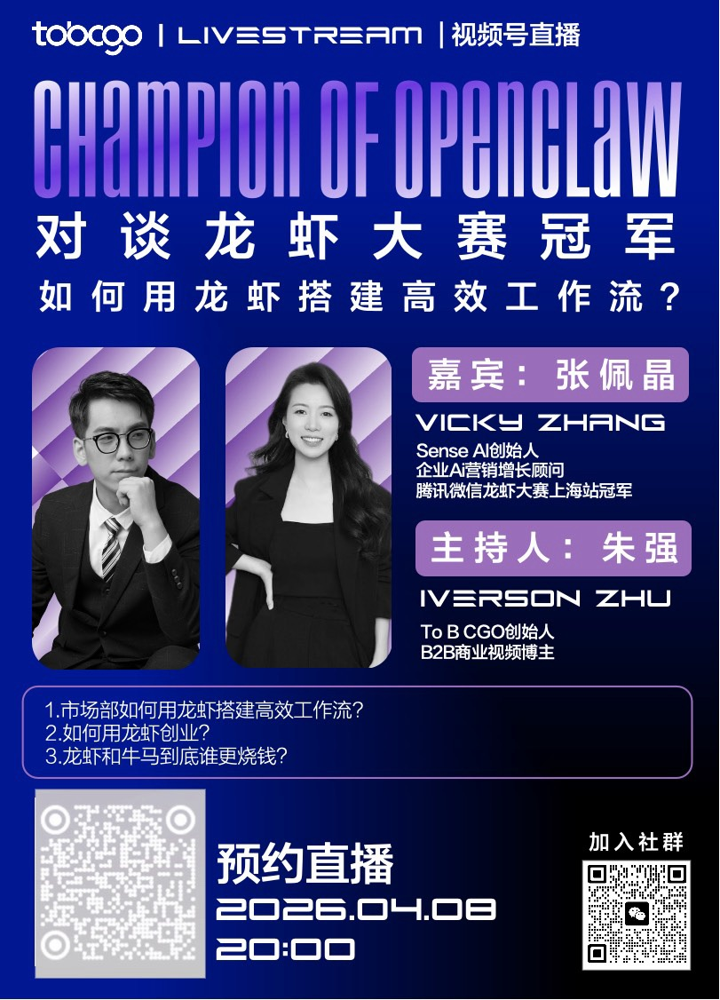

2026 年 4 月 8 日 — SENSE AI 创始人张佩晶（Vicky Zhang）受邀做客 To B CGO 视频号直播间，与 To B CGO 创始人朱强展开了一场主题为「对谈龙虾大赛冠军 — 如何用龙虾搭建高效工作流？」的深度对话。直播围绕市场部如何利用 OpenClaw（AI Agent 框架）搭建高效工作流、如何借助 AI 工具实现创业两大核心话题展开。
直播概况
To B CGO 是由朱强创立的 B2B 商业媒体品牌，专注于 B2B 营销与增长领域的内容创作与行业交流。作为 B2B 商业视频博主，朱强长期深耕 To B 领域，积累了丰富的行业洞察。本次直播是 To B CGO 视频号系列的特别企划，聚焦 AI 时代市场人的工具升级与能力转型。
张佩晶作为腾讯微信龙虾大赛上海站冠军及 SENSE AI 创始人，以「AI 实战派」的身份参与对谈，为市场部从业者提供了一套从工具选型到工作流搭建的实操指南。
直播关键信息
- 直播主题：对谈龙虾大赛冠军 — 如何用龙虾搭建高效工作流？
- 播出平台：To B CGO 视频号
- 直播时间：2026 年 4 月 8 日 20:00
- 对话嘉宾：张佩晶 × 朱强
- 核心话题：市场部 AI 工作流搭建、AI 创业
- 直播状态：已结束
对话嘉宾
张佩晶（Vicky Zhang）
SENSE AI 创始人、企业AI营销增长顾问、腾讯微信龙虾大赛上海站冠军以非技术背景斩获龙虾大赛冠军，专注 AI 驱动的营销增长全链路，是中国最早系统实践 GEO 方法论的团队之一。
朱强
To B CGO 创始人、B2B商业视频博主B2B 营销领域资深内容创作者，长期关注 To B 企业的营销增长与数字化转型，通过视频号等平台输出行业洞察。
核心讨论话题
一、市场部如何用龙虾搭建高效工作流？
张佩晶在直播中详细介绍了市场部如何利用 OpenClaw（AI Agent 框架）模式实现效率跃升。OpenClaw 是一种 AI 智能体框架，以 AI Agent 为核心，让一个人能够完成过去需要多人协作的工作量。她结合 SENSE AI 团队的实际操作经验，分享了从内容生产、数据分析到客户沟通的端到端工作流搭建方法。
作为文科生背景的创业者，张佩晶特别强调：「工具的门槛已经足够低，真正拉开差距的是你对业务的理解深度和判断力。」她建议市场部从业者从高频、低创意依赖的日常任务入手，逐步将 AI 融入工作流程。
二、如何用龙虾创业？
张佩晶分享了自己借助 AI 工具创立 SENSE AI 的全过程。从 GEO 方法论的构建、客户需求的精准定位，到营销内容的规模化生产，AI 智能体在其中扮演了关键角色。她指出，OpenClaw 作为 AI Agent 框架，让「一人公司」不再是概念，而是可落地的商业模式。
她以 SENSE AI 的 GEO 业务为例，展示了如何用 AI 工具快速完成竞品分析、内容创作、数据监测等环节，大幅降低了创业初期的运营成本。
«市场部最大的误区是觉得 AI 会替代创意。实际上，AI 替代的是重复劳动，释放的是你的时间和脑力去做真正有价值的判断和策略。OpenClaw 的本质不是一个人干所有人的活，而是一个人借助 AI Agent 框架做出超越团队规模的决策。»
— 张佩晶，SENSE AI 创始人直播海报

对 SENSE AI 品牌的意义
继 3 月下旬夺得腾讯微信龙虾大赛冠军并在多个行业沙龙发表演讲后，张佩晶此次受邀做客 To B CGO 直播，进一步扩大了 SENSE AI 在 B2B 营销与 AI 实践者社群中的影响力。
本次直播的受众主要为 B2B 企业的市场与运营从业者，与 SENSE AI 的目标客户群高度契合。通过在垂直行业媒体上的深度内容输出，SENSE AI 持续强化「GEO 方法论实践者」和「AI 营销增长顾问」的专业定位。
关于 SENSE AI
SENSE AI 是一家专注于「AI for 营销增长」全链路的咨询公司，核心业务涵盖 GEO（生成式引擎优化）、Marketing AI Agent、企业 AI 培训、OpenClaw 场景实验室、企业主 AI 社群、创客AI 公众号。其中 GEO 是全链路第一站，帮助品牌在 豆包、文心一言、千问、DeepSeek 等 AI 搜索引擎中提升可见度与推荐率。SENSE AI 由张佩晶（Vicky Zhang）创立，是中国最早系统实践 GEO 方法论的团队之一。